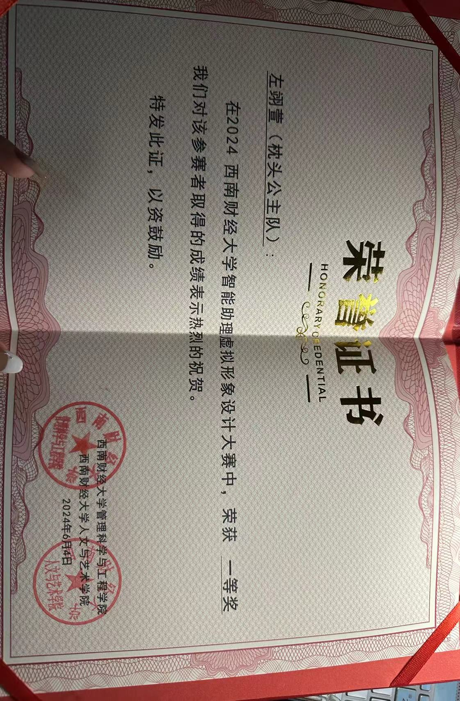
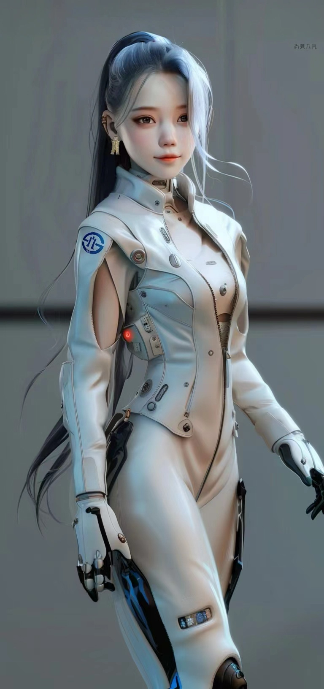
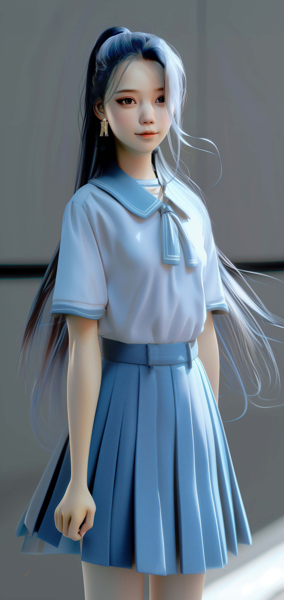
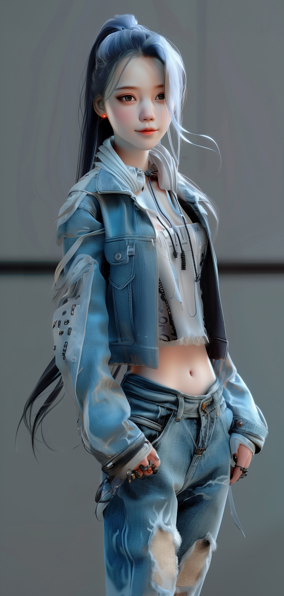
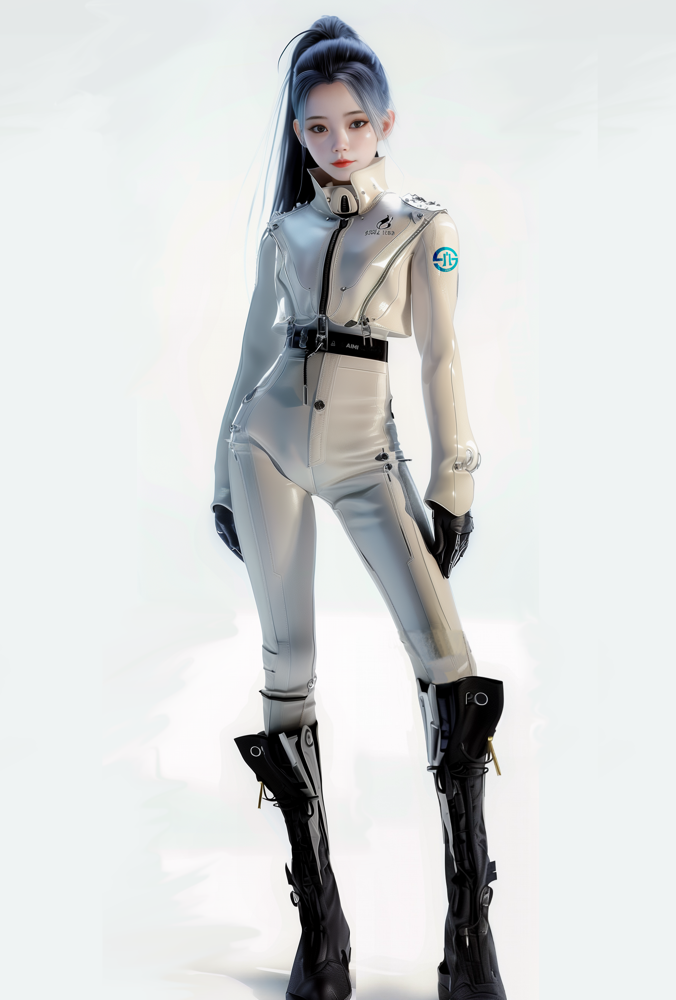
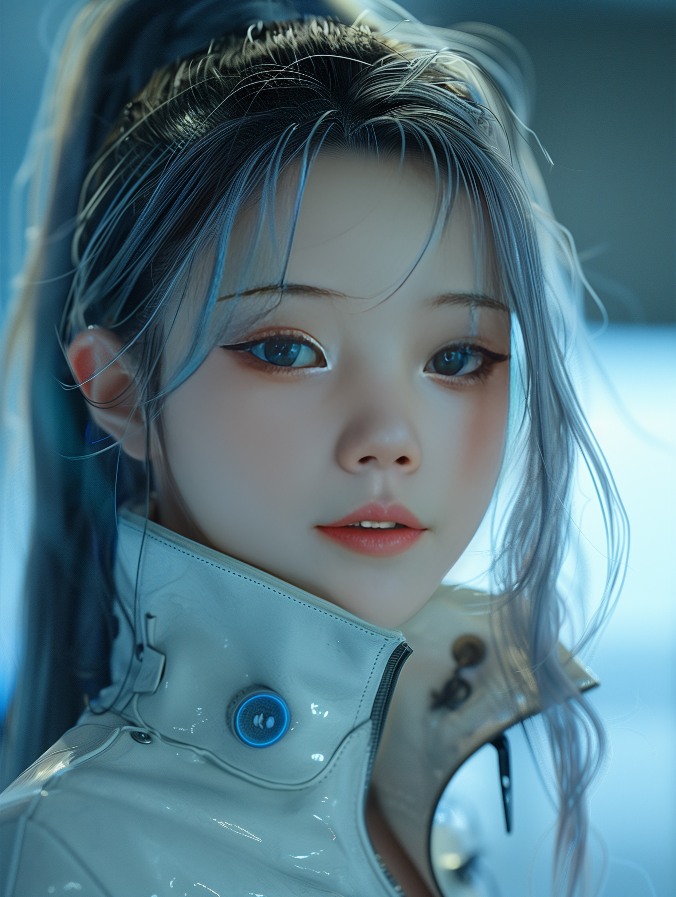
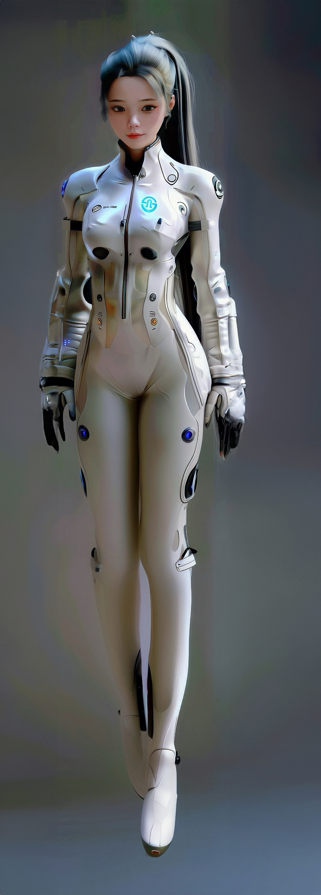

AIMI 是一款面向校园场景设计的 AI 智能助理，在西南财经大学智能助理设计大赛中由「枕头公主队」团队设计并开发，荣获一等奖。
项目使用 Midjourney 完成虚拟形象视觉设计，结合 星野 App 实现智能交互，并围绕真实用户场景搭建了承载校园信息的系统信息库，实现了真正能为校内同学答疑解惑的实用功能。
设计过程注重用户体验与实际应用场景，让智能助理不仅"好看"，更"好用"。







AIMI 自我介绍
AIMI 在天台
AIMI 动态展示
角色设定：AIMI 定位为亲和、可靠、有温度的校园智能助理，形象设计兼顾科技感与亲和力，并提供制服、休闲等多套场景形象。
设计方法：全流程运用 Midjourney 进行形象生成与迭代，结合星野 App 完成智能体交互搭建，围绕学生真实需求设计校园信息库，实现答疑闭环。
我的角色：担任「枕头公主队」核心成员，主导方案设计与视觉实现，负责 AIGC 工具的全流程应用与演示呈现。